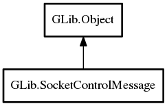

SocketControlMessage
Object Hierarchy:
Description:
A SocketControlMessage is a special-purpose utility message that can be sent to or received from a Socket.
These types of messages are often called "ancillary data".
The message can represent some sort of special instruction to or information from the socket or can represent a special kind of transfer to the peer (for example, sending a file descriptor over a UNIX socket).
These messages are sent with send_message and received with receive_message.
To extend the set of control message that can be sent, subclass this class and override the get_size, get_level, get_type and serialize methods.
To extend the set of control messages that can be received, subclass this class and implement the deserialize method. Also, make sure your class is registered with the GType typesystem before calling receive_message to read such a message.
Namespace: GLib
Package: gio-2.0
Content:
Static methods:
Creation methods:
Methods:
Inherited Members:
All known members inherited from class GLib.Object